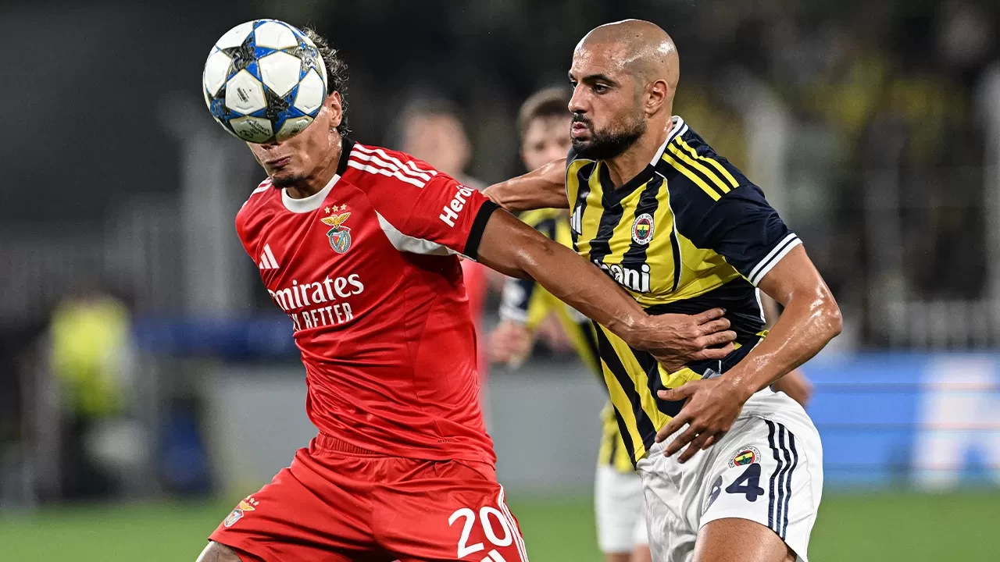

Fenerbahçe'den **Real Betis'e Kesin Ret!** Yönetim Kararlı
Yayınlanma Tarihi: 03 Aralık 2025
Fenerbahçe'de transfer hareketliliği devam ederken, İspanyol kulübü Real Betis'ten gelen resmi teklif, yönetim tarafından **kesin bir dille reddedildi**. Sarı-lacivertli kulüp, teklife konu olan yıldız oyuncuyu sezon sonuna kadar kadroda tutma kararlılığını bir kez daha gösterdi.
Real Betis'in teklifinin, oyuncu için belirlenen alt limitin oldukça altında olduğu ve ödeme planının Fenerbahçe'nin beklentilerini karşılamadığı öğrenildi. Yönetim Kurulu Üyesi yaptığı açıklamada, "Bizim için sportif başarı her şeyden önce gelir. Bu oyuncu, teknik ekibin gelecek planlarında kritik bir role sahip. Bu nedenle, teklif ne kadar cazip görünse de, takımın hedeflerini riske atamayız," ifadelerini kullandı.
Kulübün Finansal Stratejisi
Fenerbahçe, finansal sürdürülebilirlik hedefleri doğrultusunda oyuncu satışı yapmaya açık olsa da, bu satışların takımı zayıflatmaması gerektiğini düşünüyor. Özellikle şampiyonluk yolunda kritik bir döneme girilirken, temel oyuncuları kaybetmek, camiada büyük tepkiye yol açabilirdi. Real Betis'in teklifinin reddedilmesi, bu sezonki şampiyonluk hedefine verilen önemin bir kanıtı olarak yorumlandı.
İspanyol basını, Betis'in bu red cevabından sonra rotayı başka oyunculara çevireceğini bildirirken, Fenerbahçe'de ise teknik direktör, oyuncusunun takımda kalmasından duyduğu memnuniyeti dile getirdi. Transfer penceresinin kapanmasına kadar kulübün başka sürpriz tekliflere kapalı olduğu, mevcut kadroyla devam edileceği belirtiliyor.